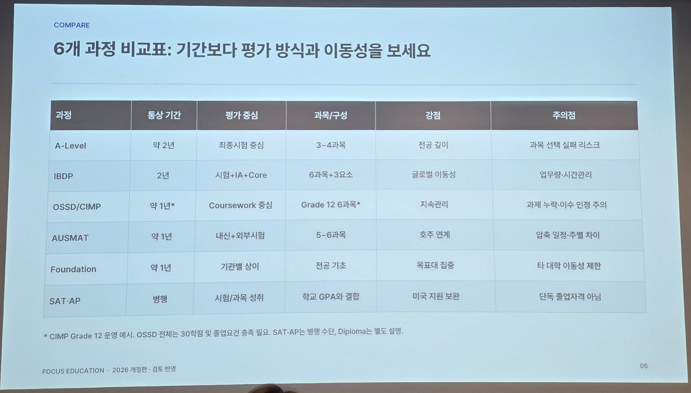

← 대학 입시
🛤️ 진학 길
Pathways · IGCSE 다음 대학 가기 전 과정

포커스에듀케이션 설명회 (2026-11-14) 슬라이드 내용입니다. 기간과 과목 구성은 학교별로 다릅니다.
1. A-Level
약 2년 · 보통 3~4과목 · 외부시험 중심
모나쉬 호주 점수 계산: 가장 잘 본 3과목 합. A*=5, A=5, B=4, C=3, D=2, E=1.
간호학(Clayton) 8.5 · 약학 12 (B B B) · 의학 15 (A A A)
2. IBDP
2년 · 6과목과 핵심활동 · 시험·과제·탐구활동
모나쉬 호주 점수: 간호학(Clayton) 27 · 약학 33 · 의학 39
3. OSSD/CIMP
Grade 12 과정 약 1년* · 지속적인 과제·평가 중심
4. AUSMAT
약 1년 · 영어와 전공 관련 과목 · 학교 평가·외부시험
5. Foundation
약 1년 · 전공 기초과목 · 과정별 평가 방식 상이
모나쉬 파운데이션 MUFY (머피): 1년 · 멜버른(2월·8월 시작) 또는 말레이시아 Sunway College(1월·7월·8월 시작)
모나쉬 호주 점수: 간호학(Clayton) 72.5% · 약학 75% · 의학 92%
진로 상담 → 호주 약학에서 MUFY 자세히 보기 →
6. SAT·AP
고교 과정과 병행 · 시험·과목별 성취도 평가
* OSSD/CIMP는 이전 학교에서 인정받는 학점에 따라 기간이 달라집니다. CIMP Grade 12 운영 예시. OSSD 전체는 30학점 및 졸업요건 충족 필요. SAT·AP는 병행 수단.